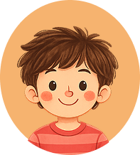
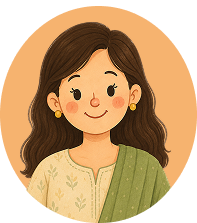
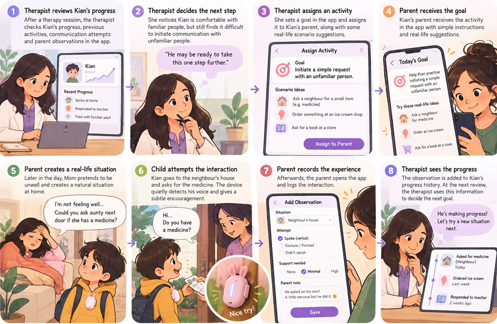
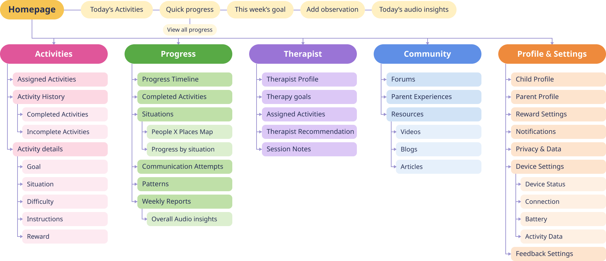

UX research and children-centred design
Supporting Children with Selective Mutism.
A wearable companion and a connected app that turn a clinician's talking-ladder method into something a child can carry, and a parent, teacher and therapist can each use, every day.

At a glance
Selective mutism is an anxiety condition, not shyness, affecting an estimated 0.7–2% of young children (roughly 1 in 140). A child who chats at home can fall silent at school. Therapy happens weekly, but real practice happens in between. This project explores a soft wearable device and a connected app built around that gap.
clinical assessment tools translated into product decisions (SMQ, FSSM)
expert interviews: 5 clinicians from India and a board member of the Selective Mutism Association (US)
design principles, with a measured colour-contrast system behind them
core app flows mapped end to end, plus onboarding & edge cases
01 · Secondary Research
Understanding the condition.
Symptoms appear between ages 3–5, often at preschool. The silence looks like shyness, so many children go undiagnosed for years.
Finding 01
The child wants to talk
Anxiety blocks it. Support, never "fix."
Finding 02
Pressure backfires
Questions and eye contact raise anxiety.
Finding 03
Speech is a gradient
Reward every step, not just full speech.
Finding 04
Untreated, it compounds
Isolation and anxiety into adulthood.
What this revealed
The real work happens in everyday life, not just in the clinic hour.
02 · Secondary Research
The mechanics behind every working intervention.
Therapies that work use a few simple ideas: small steps, gentle practice and rewards. Much like levels in a game, these can become features in a product.
The talking ladder
What already exists
Help during sessions, but they speak for the child instead of helping the child find their own voice.
Early trials let children practise between sessions.
Questionnaires for adults. Made for clinics, not for children.
Track how much a child speaks in different places.
Children find robots easier to talk to than people. None are made for selective mutism yet.
Puppets, role play and music keep practice gentle and pressure-free.
The generalisation gap
Gains made in clinic don't carry over without daily practice.
Manuals, not tools
Parents get 300-page workbooks, not a daily system.
The child is missing
Few tools give the child agency or a "brave talker" identity.
03 · Primary Research
Safety comes before speech.
interviews: 5 clinicians from India and Katelyn Reed, Selective Mutism Program Director at Thriving Minds and a board member of the Selective Mutism Association (US).
Therapies for selective mutism go one small step at a time and never force a child to speak. Parents and teachers keep that support going every day. So we stopped asking how to make a child speak, and asked how to make them feel safe.
“Children don't need to be taught to speak, they need to feel safe enough to speak.”Clinical psychologist interview
Affinity mapping
Notes from all six interviews, clustered into six themes.
1. Clinical Presentation & Behaviors
Chatty and confident at home, but completely silent in public.
PsychiatristFast breathing and shaking. The child freezes like a statue when put on the spot.
TeacherWords may sound unclear, even when the child feels comfortable one-on-one.
TeacherScreaming or crying shows the voice is fine. The silence comes from fear.
PediatricianSome children open up to just one trusted person, and only after a long time.
Pediatrician2. Early Diagnostic Indicators
Seen when speech should begin, often when the child starts play school.
PediatricianOnly pointing or crying after age 2 can be an early warning sign.
PediatricianThe child focuses on fans or toys and ignores people.
PediatricianDoctors must rule out hearing or other physical problems first.
Clinical ruleExtreme shyness and avoiding other children after age 2 are warning signs.
Pediatrician3. Environmental & Root Causes
Shouting and fighting can make attention feel scary.
TeacherScreens replace real talking. Children copy the way people speak in videos.
Clinical noteTalking with people can feel overwhelming, so the child shuts down.
PsychiatristCauses vary, from family traits to a parent's worry or delays.
Pediatrician4. Therapy & Clinical Interventions
Behaviour therapy and speech therapy are the first choice.
Clinical consensusProgress is slow and steady.
TherapistHelp at age 3 to 4 gives the best chance of the child saying single words.
PediatricianA child does better with one trusted adult at school.
School research5. Rapport & Human Engagement
The child must feel safe before talking. Pushing makes it worse.
Core treatment ruleSit at the child's height and make eye contact through fun play.
Therapist methodPractice with a person, not a screen.
Clinical directiveAsk for one simple word every day, like "Mamma", "A" or "B".
Daily goal6. Constraints
Long sentences are too hard. Use short phrases like "paani aane".
Essential ruleAI voices feel like too much. Use simple stories and activities.
Design constraintNatural reactions, like laughing when tickled, matter more than fancy visuals.
UX principleParents are tired. Setup must be very simple.
Parent UXChildren who love objects can use toys to follow a daily routine.
Product opportunityA child needs comfort and trust before a new communication step.
Gestures, whispers and attempts belong in the picture of progress.
The product should support real interaction rather than replace it.
Guidance and logging must fit daily life.
Soft, predictable objects can make practice feel more approachable.
Home, school and therapy need a shared sense of what helps.
Understanding assessment tools
We explored established clinical questionnaires used to assess selective mutism, understand speaking behaviour across different settings, and identify areas of difficulty.
A short form that a parent fills in. It shows how much a child speaks at school, at home and in social settings, and how much the silence upsets them.
A form that shows how severe the mutism is. It has separate versions for ages 3 to 7, 6 to 11 and 12 to 18, and covers school, public places and home.
What we took from it
Speaking differs at school, home and in public, so progress is tracked place by place.
Both tools are repeated again and again, so the product shows change, not one-off scores.
What counts as progress changes with age, so goals and wording must fit the child.
A regular check-in goes to the therapist, not the child, so practice stays pressure-free.
"Avoidance fuels anxiety… the more that we avoid, the more that we build up anxiety."
— Katelyn Reed, past president of the Selective Mutism Association
04 · Define
Understanding emotions behind behaviour.
Four personas, built from our research, show the same silence from four points of view.

"I know what I want to say… but the words just won't come out."
- Make friends
- Answer without feeling scared
- Join class activities
- Time, with no pressure to speak
- Ways to share without words
- Trusted people close by
"A patient silence is a form of powerful dialogue. My role is to hold the space, not fill it with expectations."
- Link families, schools and doctors
- Build affordable tools
- Involve parents as partners
- Information shared across home, school and clinic
- Tools that suit Indian families
- A way to see progress between sessions
"I have seen children who don't speak in class, but I didn't know it could be an anxiety disorder."
- Create a safe classroom
- Support communication
- Build children's confidence
- Training on selective mutism
- Easy classroom strategies
- Easy contact with parents and therapists

"My role is not to make my child speak, but to help them feel safe, confident, and understood every step of the way."
- Help her child communicate confidently
- Reduce her child's anxiety
- Keep track of progress
- Simple strategies that fit daily life
- A clear view of progress
- Regular contact with teachers and therapist
Each person sees a different part of Kian's experience. The moment of speaking is hard for him. The bigger challenge is that the people supporting him aren't connected.
NeedsRoom to participate
NeedsConfidence in how to help
NeedsSimple ways to support in class
NeedsA fuller picture between sessions
The support gap
What happens when the child leaves the therapy room?
Continuity became our design opportunity.
05 · Reframe
How might we support children beyond the therapy room without creating another source of pressure?
Three things the HMW had to hold
01
Communication beyond safe spaces
Children may communicate comfortably in familiar environments but struggle when anxiety increases in unfamiliar or socially demanding situations.
02
The gap between therapy and everyday life
Therapy provides structured strategies, but children have limited consistent opportunities to practise and reinforce them between sessions.
03
Inconsistent support around the child
Parents and teachers want to help but may lack the practical guidance and shared understanding needed to support communication consistently.
06 · Ideate
From a wide feature brainstorm to a focused concept.
Ideation was organised into twelve themes, each one tracing back to a specific research or interview insight, before converging on Brave Buddy.
Goal map & goal setting
Child profile & comfort
Practice & games
Companion character
Rewards & celebration
Calm & help
Recording what happened
Progress & reports
Guidance & coaching
Care team & sessions
Community
Design principles
We then started exploring concepts
With comfort and continuity as priorities, we explored four ways to make support feel familiar and usable in a child’s day.

Concept 01
Communication Companion
A friendly object that encourages and appreciates communication attempts.

Concept 02
Adaptable to Environment
One core device used in different ways across school, home and play.

Concept 03 · Selected
Personal Tracker + App
A compact wearable that records everyday moments and connects to an app so progress can be seen over time.

Concept 04
Sling Type Bag
A wearable bag that makes the device part of everyday carry.
07 · The Chosen Concept
A connected support system for everyday communication.
Brave Buddy is a clip-on companion for the child, paired with an app for activities, guidance and progress. It listens and cheers gently, so communicating feels easier.

Child
Tries a small activity in real life.
The companion notes each attempt.
Companion
Clipped on to clothes or a bag.
Data goes to the app.
App
Progress shows up over time.
The app helps the adults support the child.
Parent + Therapist
Parent follows the steps and records what happened. Therapist sets goals. Teachers share tips to help parents.
The companion gives gentle feedback that celebrates every effort.
AppreciateWhat's on the device?
The Form
But why an animal-shaped product?
Our research explored what children with selective mutism may find comforting, and animals emerged as a source of comfort. So the companion comes in different animal forms, giving children a choice.
In Everyday Life
So how could this concept work in everyday life?
The concept needed to reach beyond the therapy room without adding pressure. We designed a simple cycle: therapist guidance, everyday practice and feedback.
Guide
Therapist sets a goal
Practice
Parent opens the activity
Experience
Child tries it in real life
Learn
Progress informs the next step

08 · Information Architecture
Mapping the parent app.
Six top-level sections, each tracing back to a flow or research insight above.
01
Home
Today's activities, current goal, quick progress, add observation, view progress.
02
Activities
Assigned (today / upcoming / completed) and real-world (home, school, social, public, parent–child) activities, each with goal, situation, difficulty and instructions.
03
Progress
Overview, current goals, timeline, People × Places map, communication attempts, situation-wise progress, observations, reports.
04
Therapist
Profile, therapy goals, assigned activities, recommendations, session updates, messages.
05
Community
Forums, parent experiences, and resources (videos, blogs, articles).
06
Profile & Settings
Child & parent profile, reward settings, notifications, privacy & data, device status and connection.

09 · User Flows
Three flows that carry the whole loop.
Plan
Therapist assigns the week's activitiesThe therapist reviews the child's current progress and observations, sets or adjusts the therapeutic focus, selects activities, assigns them for the week, and adds recommendations for the parent. This establishes what the child will practise between sessions.
Practise
Parent and child complete an assigned activityThe parent opens today's activities, reads the situation, goal, difficulty and instructions, and starts. The child practises in the real-world situation with the wearable's in-the-moment support; the parent records how it went. This is the actual gap the project is designed to close.
Review
Parent and therapist review the week's progressThe system captures completed activities, communication attempts, situations practised, People × Places, and parent observations. The therapist reviews the weekly report and uses it to plan the next week.
Five core flows were mapped end to end — completing an activity, reviewing progress, reviewing therapist goals, exploring the community, and managing profile/device settings — plus a sixth covering onboarding, empty states, offline mode and check-ins. Each flow went through an initial pass and a reworked revision.
10 · UI & Wireframes
From low-fidelity to a working UI kit.
Low-fidelity wireframes mapped each flow before the design system (below) was applied, so components solved real navigation problems rather than just looking considered.
Export each final screen from its named Figma frame (Home / Activities / Progress / Therapist / Community / Profile & Settings), plus "Icons & Controls" and "More Components" if you want a components spread.
11 · Design System
Principles & colour.
Eight principles, pressure-tested against a sensitive child and a tired parent, not just a style guide.
Colour, with reasons attached
A 60/30/10 rule — calm canvas, quiet structure, a small amount of accent — so colour guides the eye without ever shouting.
Canvas
#FAF7F2 · app background
Surface
#FFFFFF · cards, sheets
Structure
#E0DEF5 · sections, selected
Ink
#464775 · all core text
Violet
#6259D8 · primary actions
Coral
#DD6B53 · privacy and alerts
Peach
#FDE4CE · observations, teacher notes
Mint
#DCE8D6 · solutions, positive facts
Rose
#FCD8E3 · feelings, empathy
Sky
#D1E3F6 · journey, therapist roadmap
Contrast, checked: 8.1:1 Ink on Canvas · ~7:1 Ink on every pastel · 5.3:1 White on Violet · 5.0:1 Violet on Canvas · 3.1:1 Coral on Canvas (Coral is for icons and large text only). Wearable signal states (Ready / Help / Break / Try) always pair colour with an icon and a label — never colour alone.
12 · Design System
Patterns & accessibility.
WCAG AA as the floor, AAA for body text where possible.
48px minimum tap targets, 56px for primary actions, placed in the thumb zone.
Text scales to 200% and reflows; nothing truncates.
Reduced motion is honoured; nothing ever flashes.
No colour-only meaning: every state pairs an icon with a label.
Screen readers announce the moment — e.g. "Ready. I can continue."
Works offline, with the sync state always visible.
English, Hindi and Marathi from day one; layouts allow 30–40% longer strings.
Words we use
Use
Avoid
The product's language describes support and practice, never a cure — a child's own pace is the goal, not a condition to be corrected.
Warm scripts for parents
The pressure test — every feature answers six questions
Does it demand speech, speed or a streak?
Does it compare the child with anyone or anything?
Does it reward an outcome instead of effort?
Does it use a banned word or a failure state?
Could it overstimulate in light, sound or motion?
Does it work one-handed, offline and in two languages?
A "yes" to 1–5, or a "no" to 6, sends the feature back.
Privacy by design
Local-first: audio and notes stay on the phone.
No camera, no video, no covert observation.
No diagnosis labels or scores shown to parents.
The child controls the helper card; no public labelling.
Plain-language consent, one toggle at a time.
The never list: no timers, no leaderboards, no streak loss, no AI voice, no text-to-speech, no ads.
13 · Validation
Testing plan.
What we want to learn, who we test with, and how we measure it — defined and ready to run.
Goal
What we want to learn
Can parents complete an activity and record results without help? Is the companion comfortable, clear and calm for the child? Do therapists find the progress data useful for planning?
Who
Participants
3–5 parents of children (4–10) with SM, 1–2 therapists or special educators, 1 primary school teacher. The child only handles the device with a parent present and consent.
How
Method
Moderated sessions on the clickable app prototype, think-aloud while completing tasks, a comfort/wear check of the physical model, and a short interview at the end.
Tasks
We measure: task completed (yes / with help / no) · time on task · ease rating 1–5 · child comfort (calm / unsure / upset) · quotes and suggestions.
14 · Reflection
What this project taught me.
Placeholders below — add your own 2–3 sentences for each, these are prompts, not pre-written takeaways.
01
What surprised you in the research?
[Add 2–3 sentences.]
02
Where did the brief change once you talked to Katelyn Reed?
[Add 2–3 sentences.]
03
What would you want to test first?
[Add 2–3 sentences.]
04
What would you change about the process?
[Add 2–3 sentences.]
Practising bravery, one everyday moment at a time.
A product design case study on supporting children with selective mutism between therapy sessions, developed as part of a design course.
Project by
Nidhi Patil